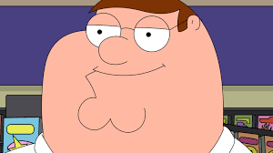

My favorite activity to do in my free times is wood carving. Wood carving is significantly similar to
software developing. You make make plans for your future masterpiece, you start creating that masterpiece.
Sometimes things stick to the plan, and sometimes things become complicated. A skewed saw cut or a
miscalculation can force you to change the existing plans. These consecuences may cause some changes in the original
plan. But the goal never changes. Software development make me love wood carving and wood carving make me
love software developing. Thats why this activity is so special to me.
